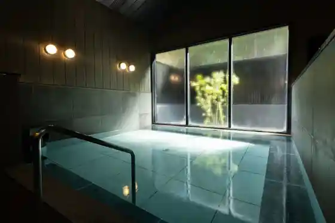
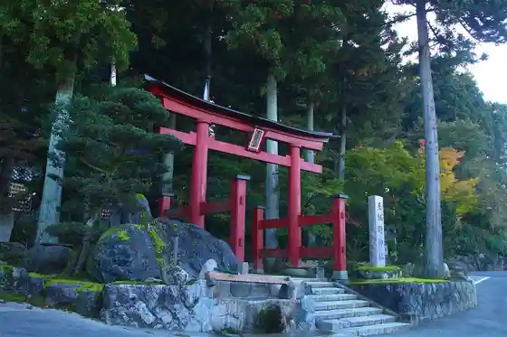
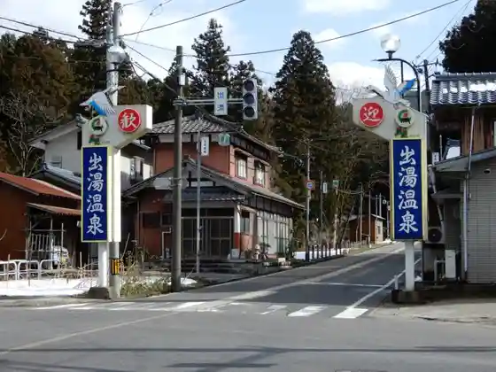

Hyo Kosui Kin Park
Agano, Niigata · 0250-62-2690 · Official / source link
Hana Ho Tera Baths
Agano, Niigata · 0250-62-3615 · Official / source link

Tan Iino Shrine
Agano, Niigata · 0250-62-4755 · Official / source link

Ideyu Onsen (Goto Onsen Sato)
Agano, Niigata · 0250-62-2510 · Official / source link

Kyodoyokujo Kusurishi Baths
Agano, Niigata · 0250-66-2626 · Official / source link
Murasugi Onsen (Goto Onsen Sato)
Agano, Niigata · 0250-62-2510 · Official / source link
Yasuda Onsen Hoyo Center Yasuragi
Agano, Niigata · 0250-68-1555 · Official / source link
Santopiawarudo
Agano, Niigata · 0250-68-3450 · Official / source link
Ideyu Kyodo Bath
Agano, Niigata · 0250-62-3863 · Official / source link
Roadside Station (Aga no)
Agano, Niigata · 0250-25-7011 · Official / source link
Hoshuyama Akamatsu Yama Tozanguchi
Agano, Niigata · 0250-62-2510 · Official / source link
Goto Sanroku Urara Forest Johohasshin Kan
Agano, Niigata · 0250-61-3511 · Official / source link
Kojun Tera (Kyu Saito Tei)
Agano, Niigata · 0250-68-2434 · Official / source link
Yasuda Kawara Rodo (Yasuda Kawara Kyodokumiai)
Agano, Niigata · 0250-68-2112 · Official / source link
Yasudayoguruto Chiizu Senmonten (Furomajusera)
Agano, Niigata · 0250-68-5028 · Official / source link
Donguri Forest Campground
Agano, Niigata · 0250-62-2510 · Official / source link
Akamatsu Yama Forest Park Campground
Agano, Niigata · 0250-62-2690 · Official / source link
Hyo Mizumi Residence no Mori Buruwarii / Suwanreikubiiru
Agano, Niigata · 0250-63-2000 · Official / source link
Goto Sanroku Ikoi Forest
Agano, Niigata · 080-6519-0273 · Official / source link
Hachi Kome no Himawari Hatake
Agano, Niigata · 025-246-0800 · Official / source link
Yasudayoguruto
Agano, Niigata · 0250-68-5028 · Official / source link
Yasuda Castle Ruins
Agano, Niigata · 0250-68-3006 · Official / source link
Yoshida Togo Kinen Museum
Agano, Niigata · 0250-68-1200 · Official / source link
Etsu Tsuka no Shuzo (Kabu) / (Daidai Izumi)
Agano, Niigata · 0250-62-2011 · Official / source link
Yasuda Kowa Noji Ichigo Sono
Agano, Niigata · 0250-68-4660 · Official / source link
Hyo Mizumi Ayame Sono
Agano, Niigata · 0250-62-2690 · Official / source link
Oku Village Sugi Campground
Agano, Niigata · 0250-62-2510 · Official / source link
Hyo Kohan Furin Festival
Agano, Niigata · 0250-62-3786 · Official / source link
Iodome Me Falls
Agano, Niigata · 0250-62-2510 · Official / source link
Ume Go Tera no Juzu Kakari Zakura
Agano, Niigata · 0250-67-2915 · Official / source link
Echigo Sakura Shuzo (Kabu) / (Daiginjo Echigo Sakura)
Agano, Niigata · 0250-62-2033 · Official / source link
Mizuhara Daikan Tokoro
Agano, Niigata · 0250-62-2510 · Official / source link
Hyo Kosui Kin Park
Agano, Niigata · 0250-62-2510 · Official / source link
Iwase no Shimizu (Iwase no Shimizu)
Agano, Niigata · 0250-62-2510 · Official / source link
5yukuri
Agano, Niigata · 0250-62-4423 · Official / source link
Sofutokuriimu & Jieratoshoppu
Agano, Niigata · 090-4917-0429 · Official / source link
Shin Ko no Sakura Namiki
Agano, Niigata · 0250-62-2510 · Official / source link
Ume Go Tera no Hachi Bo no Ume
Agano, Niigata · 0250-67-2915 · Official / source link
Hakuryu Shuzo (Kabu) / (Hakuryu)
Agano, Niigata · 0250-62-2222 · Official / source link
Hana Ho Tera
Agano, Niigata · 0250-62-2510 · Official / source link
Sasakami Goto Gorufu Kurabu
Agano, Niigata · 0250-62-6231 · Official / source link
Yamaguchi Kan Yama Shotoku Hi
Agano, Niigata · 0250-62-2510 · Official / source link
Yasuda Yaki
Agano, Niigata · 0250-68-2898 · Official / source link
Yamabiko Tori
Agano, Niigata · 0250-62-2510 · Official / source link
Marusan Yasuda Kawara Kogyo
Agano, Niigata · 0250-68-3802 · Official / source link
Kuboyama Mizu Kin Park
Agano, Niigata · 0250-62-2510 · Official / source link
Iisutohirugorufu Club
Agano, Niigata · 0250-68-5100 · Official / source link
Swan Lake OFFICE
Agano, Niigata · 0250-63-1010 · Official / source link
Tencho Yama Park
Agano, Niigata · 0250-62-2510 · Official / source link
Goto Sanroku Urara no Mori Taiken Gakushu Kan
Agano, Niigata · 0250-61-3511 · Official / source link
Orijinaru no Yaki Mono Wo Tsukuro U ! Kawara Nendo Mochiifu 1 10 Ko
Agano, Niigata · 0250-68-3802 · Official / source link
Hyo Mizumi Tokusanhin Hambai Center
Agano, Niigata · 0250-62-2690 · Official / source link
Gekijo (Kawara Za) (Yasuda Onsen Yasuragi) Eigyobi Nado Ha Koshiki Saito http://yasudaonsen.com/ Dego Kakunin Kudasai
Agano, Niigata · 0250-68-1555 · Official / source link
Mizuhara Hachiman Shrine
Agano, Niigata · 0250-62-3786 · Official / source link
Yasuda Kawara Wo Waru Experience
Agano, Niigata · 0250-68-3802 · Official / source link
Agano Mizuhara Furusato Nogyo History Museum
Agano, Niigata · 0250-63-1722 · Official / source link
Dendo Rokuro Shuchu Shite Tsuchi to Muki Au Jikan Hajimete no Ho Mo Tanoshi Memasu
Agano, Niigata · Official / source link
Echigo Fu Ato (Tencho Yama)
Agano, Niigata · 0250-62-2510 · Official / source link
Hyo Kosui Kin Park no Yaezakura
Agano, Niigata · 0250-62-2690 · Official / source link
Agano Goto Yakuyo Botanical Garden
Agano, Niigata · 0250-62-2510 · Official / source link
Furusato Park (Library no Aru Park)
Agano, Niigata · 0250-67-2500 · Official / source link
Anatadake no Kawai Sakuhin Wotsukuro ! Neko no Okimono (1 Ko)
Agano, Niigata · 0250-63-2451 · Official / source link
Mui Shin Tera no Jiho
Agano, Niigata · 0250-62-2676 · Official / source link
Goto Buna no Mori Haiku
Agano, Niigata · 090-6502-5523 · Official / source link
Daizu Kako Taiken Shisetsu
Agano, Niigata · 0250-61-3102 · Official / source link